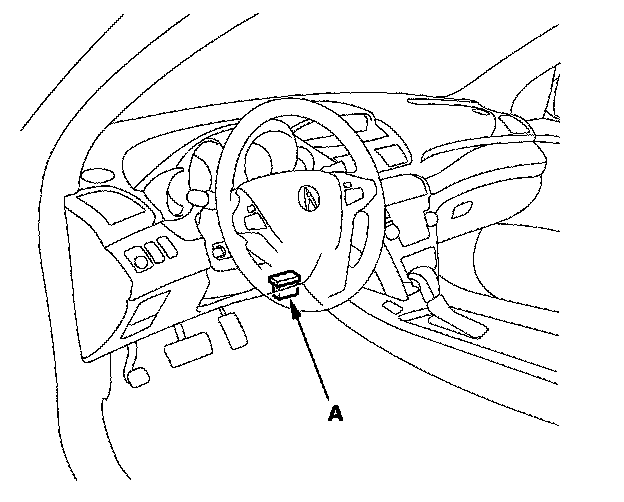
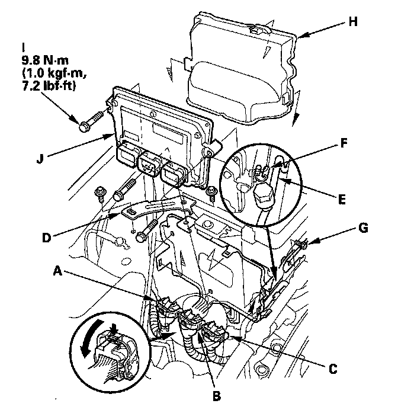

Engine Control Module: Service and Repair
PCM ReplacementNOTE:
- Make sure the HDS is loaded with the latest software version.
- If you are replacing the PCM after substituting a known-good PCM, reinstall the original PCM, then do this procedure.
- USA, Canada models: During the procedure, is any READ DATA, WRITE DATA, or other data checks fail, note the failure, then continue.

1. Connect the HDS to the data link connector (DLC) (A) located under the driver's side of the dashboard.
2. Turn the ignition switch ON (II).
3. Make sure the HDS communicates with the PCM and other vehicle systems. If it does not, go to the DLC circuit troubleshooting. Testing and Inspection
If you are returning from DLC circuit troubleshooting, skip steps 4 through 9,18 through 23, and 26 through 28, and do the following procedures after replacing the PCM;
- USA, Canada models: Replace the engine oil and the engine oil filter.
- USA, Canada models: Replace the ATF.
- USA, Canada models: Clean the throttle body.
4. USA, Canada models: Select the PGM-FI system with the HDS.
5. USA, Canada models: Select the INSPECTION MENU with the HDS.
6. USA, Canada models: Select the ETCS TEST, then select the TP POSITION CHECK, and follow the screen prompts.
NOTE: USA, Canada models: If the TP POSITION CHECK indicates FAILED, continue with this procedure.
7. USA, Canada models: Select the REPLACE PCM MENU, then select READ DATA and follow the screen prompts.
NOTE:
- USA, Canada models: Doing this step copies (READS) the engine oil life data from the original PCM so you can later download (WRITES) it into the new PCM.
- USA, Canada models: If READ DATA indicates FAILED, continue with this procedure.
8. USA, Canada models: Select the A/T system with the HDS.
9. USA, Canada models: Select the REPLACE TCM/PCM MENU, then select READ DATA and follow the screen prompts.
NOTE:
- USA, Canada models: Doing this step copies (READS) the ATF life data from the original PCM so you can later download (WRITES) it into the new PCM.
- USA, Canada models: If READ DATA indicates FAILED, continue with this procedure.
10. Turn the ignition switch OFF.
11. Jump the SCS line with the HDS.

12. Remove the bracket (D), then free the A/C discharge line (E) from the clip (F) and remove the A/C suction line mounting bracket bolt (G).
13. Remove the cover (H), then disconnect the PCM connectors A, B, and C.
NOTE: PCM connectors A, B, and C have symbols (A=D, B=A, C=O) embossed on them for identification.
14. Remove the bolts (I), then remove the PCM (J).
15. Install the parts in the reverse order of removal.
16. Turn the ignition switch ON (II).
17. USA, Canada models: Manually input the VIN to the PCM with the HDS.
NOTE: USA, Canada models: DTC P0630 "VIN Not Programmed or Mismatch" may be stored because the VIN has not been programmed into the PCM; ignore it, and continue this procedure.
18. USA, Canada models: If the READ DATA (engine oil life) failed in step 7, go to step 21. Otherwise, go to step 19.
19. USA, Canada models: Select the PGM-FI system with the HDS.
20. USA, Canada models: Select the REPLACE PCM MENU, then select WRITE DATA and follow the screen prompts.
NOTE: USA, Canada models: If the WRITE DATA indicates FAILED, continue with this procedure.
21. USA, Canada models: If the READ DATA (ATF life) failed in step 9, go to step 24. Otherwise go to step 22.
22. USA, Canada models: Select the A/T SYSTEM with the HDS.
23. USA, Canada models: Select the REPLACE TCM/PCM MENU, then select WRITE DATA and follow the screen prompts.
NOTE: USA, Canada models: If the WRITE DATA indicates FAILED, continue with this procedure.
24. Select IMMOBI system with the HDS.
25. Enter the immobilizer code with the PCM replacement procedure in the HDS; it allows you to start the engine.
26. USA, Canada models: If the TP POSITION CHECK failed in step 6 clean the throttle body, then go to step 27.
27. USA, Canada models: If the READ DATA failed in step 7 or the WRITE DATA failed in step 20, replace the engine oil and engine oil filter, then go to step 28.
28. USA, Canada models: If the READ DATA failed in step 9 or the WRITE DATA failed in step 25, replace the ATF, then go to step 29.
29. Select PGM-FI system and reset the PCM with the HDS.
30. Update the PCM if it does not have the latest software.
31. Do the PCM idle learn procedure.
32. Do the CKP pattern learn procedure.